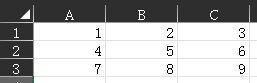
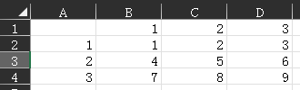
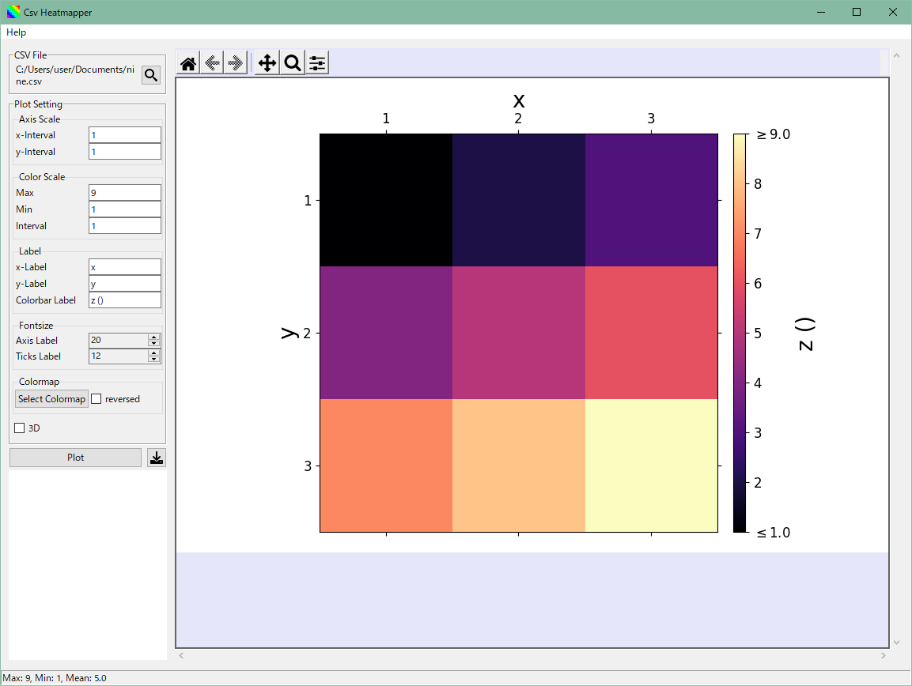
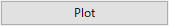
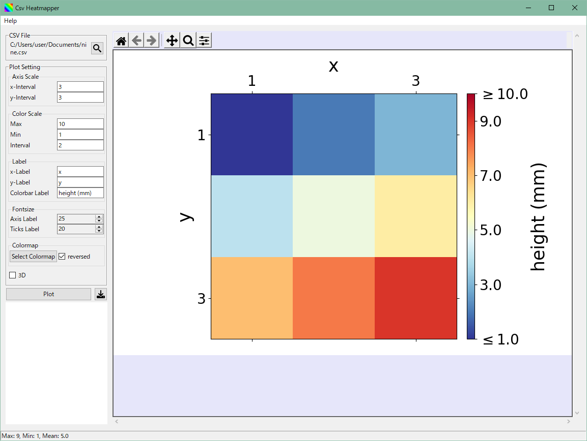

基本操作
1. CSVライクなファイルを読み込む
- をクリックして，CSVライクな ファイル（.csvまたは.xlsx形式が選択可能）を選択する．
-
ファイルは以下のようにデータのみで構成し，1行目の列名および1列目の行名は含めない．
（良い例） （悪い例）  -
ファイルを選択すると，自動でヒートマップ図が描画される．

2. Plot Settingにより描画方法を変更する
-
以下の項目が変更できる．
変更後，
で図に変更を反映させる．
設定項目 説明 Axis Scale x(y)-Interval x(y)軸の目盛り間隔 Colorscale Max(Min) カラーバーの目盛りの最大（最小）値 Inteval カラーバーの目盛り間隔 Label x-(y-/Colorbar)Label x(yまたはカラーバー)のラベル Fontsize Axis(Ticks) Label 軸（目盛り）のラベルサイズ Colormap Select Colormap カラーマップ選択ボタン reversed 選択したカラーマップを反転させる -
例
